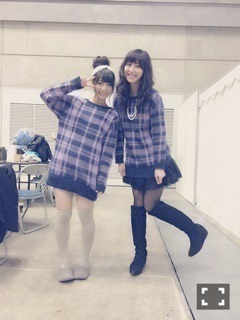
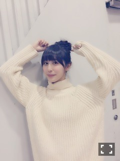

| 2015/01 27 Tue | 元気だよ(´>∀<｀)ゝ |
ちはるーむへようこそ♪
ずっとブログあげられなくてごめんねヽ(；；)丿
珍しく体調を崩してたのですが
今日から平常運転です\( ˘-˘ )/♡
元気です！！
本当に、たくさんのコメント、
ありがとうございましたヽ(；；)丿。。
凄く、凄く嬉しかったヽ(；；)丿。
こんなにたくさんの方が、
応援してくれてるなんて思ってなかった。
こんなに頑張れって思っててくれてたなんて。
本当に皆さんの声が力になります。
私は口下手で、
感情が上手く伝わらないことが多くて
すごく申し訳ないんですが。、
本当に皆さんに感謝してます。
ありがとうございます。
コメントでたくさん泣いたけど、
この涙がまた嬉し涙に変えられるその日まで。
これからも皆さんにお世話になりますヽ(；；)丿
いつもありがとう。大好き。
去年は知ってもらう年。
今年は好きになってもらう年。
もう好きだよって方は、大好きになってもらう年。
この前の握手会\( ˆ ˆ )/♡
とっても楽しい1日になったよ〜
4部！！

巻きおろしに、チェックトップス♪
ぐふふ
いつも握手会のときはメンバーに撮ってもらうんだけど、
まひろとか、愛未とか、ちまとかに
撮ってもらうと自然な表情がでてきて
こうやって何も考えず笑顔がでてくる(﹡ˆ ˆ﹡)
しかも！

きいちゃんとお揃いだった！！
びっくりした！！
まあ同い年だから趣味も似るよね(๑¯ω¯๑)笑
5部！！

お団子ヘア〜に、ニット！
4部と5部、全く雰囲気変えて行ったんだけど
こっちの服装の方が人気だったよ(﹡ˆ ˆ﹡)
嬉しいー♡

どや。
照れるとよくこの口なる。
握手会。
たくさんの方に楽しかったって思ってもらえるように
これからは今以上に努力するから！！
頑張るから！！
待ってるね(﹡ˆ ˆ﹡)
さてさて、受験生の皆さん( ･̀･́ )！
体調は大丈夫ですか( ˟_˟ )？？
私の妹もあと一ヶ月が勝負で、
ピリピリしています。
受験生のいる家族の皆さんの気持ちもよくわかるよ( ˟_˟ )
頑張ってほしいよね(∩´﹏`∩)！！
コメントとか見てると、
受験終わったら行くよ！って言ってくれる方が多くて、
今からすごく待ち遠しいです(> <)♡
待ってるからね！！(> <)
頑張ってね(> <)！！！
本番、
今まで頑張ってきた力が発揮されるように
私も応援しています(> <)！
学校終わるのが寂しくて寂しくてしょうがない。。
でもまた新たなスタートが始まると信じて
頑張っていきます\( ˆ ˆ )/♡
そうそう！
武藤彩未ちゃんとお友達なんだ♡
今度写真撮れたら撮ってくるね♪
ばいるんっ
るんるんっ
ちはるんっ
(´>∀<｀)ゝ
コメント(391)
2015/01/27 23:18